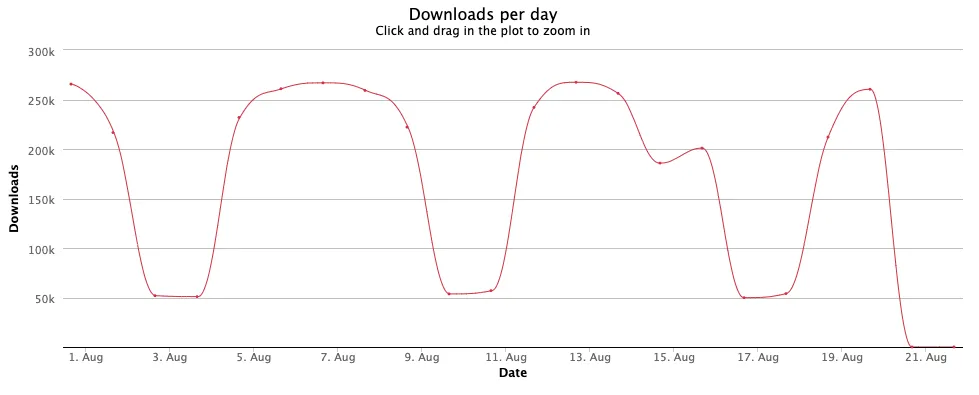
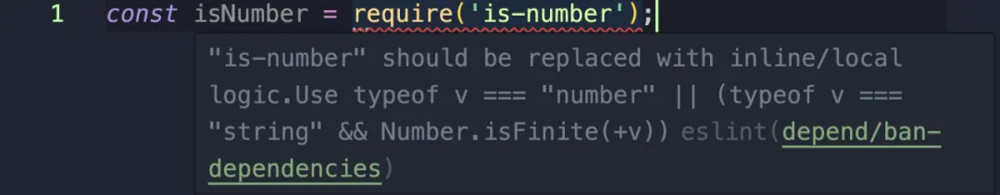

HaoTian · 2024-09-08 12:25:22
介绍了如何使用 eslint-plugin-depend 插件来移除不必要的 NPM 包，提高代码质量和性能，并强调了原生 JavaScript 功能的重要性。
NPM 生态系统中充斥着许多不必要的包，比如 is-odd、is-even、is-number 等。我们不需要这些额外的冗余包。
is-number 包，一个臭名昭著的包，它仅仅用于检查一个值是否为数字。
import isNumber from "is-number";
我检查了 is-number 包，以下是它的实际功能。
module.exports = function (num) {
if (typeof num === "number") {
return num - num === 0;
}
if (typeof num === "string" && num.trim() !== "") {
return Number.isFinite ? Number.isFinite(+num) : isFinite(+num);
}
return false;
};
如果我们只需要一个内置方法来检查某个值是否为数字。哦，等等…… 实际上已经有了。
const number = 5;
typeof number === "number" && Number.isFinite(number); // true
在 JavaScript 中，Infinity、-Infinity 和 NaN 都被视为数字，因此 typeof 对它们返回 number。因此，这些表达式的结果为 true。
typeof Infinity === "number"; // true
typeof -Infinity === "number"; // true
typeof NaN === "number"; // true
尽管 typeof 对这些值都返回 true，但 Number.isFinite 返回 false，因为 Infinity、-Infinity 和 NaN 并不是有限数字。因此，使用 && 组合的表达式结果为 false。
typeof Infinity === "number" && Number.isFinite(Infinity); // false
typeof -Infinity === "number" && Number.isFinite(-Infinity); // false
typeof NaN === "number" && Number.is;
Finite(NaN); // false
5 和 -5 都是有效的有限数字，因此这两个表达式均为 true。
typeof 5 === "number" && Number.isFinite(5); //true
typeof -5 === "number" && Number.isFinite(-5); // true
再回到这些无用的包。is-number 每周竟然有 68,049,915 次下载量，这究竟是为什么？
我猜测这可能是因为 is-number 是许多流行库和框架的依赖项。即使你没有直接使用它，它也可能通过其他依赖它的包被间接包含在你的项目中。
2016 年，left-pad 包意外从 npm 注册表中删除，导致 JavaScript 生态系统的大规模中断。
许多项目依赖这个小包来执行简单的字符串填充功能。
它的移除导致了许多项目的构建失败和错误，凸显了过度依赖过于细微或不必要依赖项的风险。
这一事件提醒我们，在可能的情况下，应尽量使用原生功能，以避免类似问题。查看 left-pad 事件的维基百科页面。
import leftpad from "left-pad";
由于 String.prototype.padStart 是现代 JavaScript 的标准部分，因此无需为此依赖额外的包。
"left-pad" 应该使用原生功能替代。你可以使用
String.prototype.padStart。
这个 ESLint 插件可以检测冗余的包，并建议更高效的替代方案。
import isNumber from "is-number";
在代码编辑器 / IDE 中会触发通知
"is-number" 应该被内联或本地逻辑替代。使用
typeof v === "number" || (typeof v === "string" && Number.isFinite(+v))eslint depend/ban-dependencies
npm i -D eslint-plugin-depend
import * as depend from "eslint-plugin-depend";
export default [depend.configs["flat/recommended"]];
你可以选择一组预设依赖项（或不选择）。以下是可用的选项：
{
"rules": {
"depend/ban-dependencies": [
"error",
{
"presets": ["native"]
}
]
}
}
默认值是 ['native', 'microutilities', 'preferred']。
modules：你可以指定你想在代码中禁止使用的模块列表。
{
"rules": {
"depend/ban-dependencies": [
"error",
{
"modules": ["im-a-banned-module"]
}
]
}
}
import * as depend from "eslint-plugin-depend";
export default [
depend.configs["flat/recommended"],
{
rules: {
"depend/ban-dependencies": [
"error",
{
presets: ["native"],
modules: ["im-a-banned-module"],
},
],
},
},
];
精简代码，清理冗余，让你的代码更具可读性。